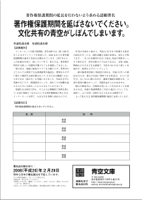
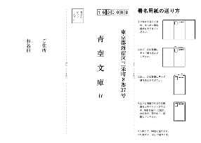
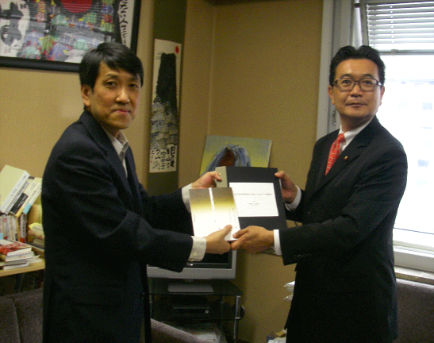

文化庁の「文化審議会著作権分科会」に設けられた「過去の著作物等の保護と利用に関する小委員会」が、検討結果の「中間整理」をまとめました。
「延ばす」「延ばさない」、双方の主張を併記したまとめに対し、広く皆さんの声を聞く、意見募集が行われることになりました。
延長には「十分な合意が得られた状況ではない」としながらも、まとめは、今後も、「検討を続けることが適当」としています。
見送りか、検討の継続か――。
「今後の審議の参考」にされるという、今回寄せられた意見は、延長問題のこれからを左右するかも知れません。
意見を寄せた人にはあわせて、本年11月上旬に予定されている「著作権に関する国民意識調査」に、自分の考えを示す権利も与えられます。
「著作権保護期間をこれまでよりさらに20年延ばし、作者の死後70年までとすることは望まない。
そんなことをすれば、インターネットを得て広がり始めた文化共有の青空が、しぼんでしまう。」
もしあなたがそう考え、望む明日を引き寄せたいと願うなら、今回の意見募集は、絶好のチャンスです。
【参考】
▼文化庁はここで、「中間整理」への意見募集（2008（平成20）年11月10日（月曜日）締め切り）を行っています。
「中間整理」自体の入手は、こちらから。
▼「中間整理」の目次です。
どの章、どの節の、どの部分に対する意見であるか示した上で、コメントするよう、求められています。
第1章 はじめに青空文庫は、以下に示した【請願主旨】を掲げて、延長反対の署名活動を進めました。
第2章 過去の著作物等の利用の円滑化
第1節 検討の経緯等
第2節 多数権利者が関わる場合の利用の円滑化について
第3節 権利者不明の場合の利用の円滑化について
第4節 次代の文化の土台となるアーカイブの円滑化について
第5節 その他の課題
第3章 保護期間の在り方について
第1節 はじめに
第2節 制度の現状
第3節 各論点についての意見の整理
第4節 関連する課題
第4章 議論の整理と今後の方向性
私たちの訴えは、「中間整理」の「第3章 保護期間の在り方について、第3節 各論点についての意見の整理、6 公有による文化創造サイクルへの影響の観点」に反映されています。
「延長に反対」の考えを示す際は、「第4章 議論の整理と今後の方向性、（２） 保護期間の在り方について」に対する意見であることを明らかにすると良さそうです。
▼延長の見送りとも、論議の継続とも受けとめられる「中間整理」の結論を、青空文庫呼びかけ人の一人は、こう読みました。
このビデオを、あなたのページでも公開してください。貼り方を、以下で説明します。
青空文庫では、夏目漱石や、芥川竜之介、太宰治などの作品を、誰でも自由に読むことができます。この「自由」は、作品を保護する期間を作者の死後50年までとし、そこから先は制限をゆるめて、利用を積極的に促そうと決めている、著作権制度のたまものです。すでにあるものをもとに、新しい作品を仕立てたり、翻訳したりする「自由」、演奏や上演などの「自由」も、著作権が切れた後は、広く認められます。
この保護期間を、死後70年に延長しようとする検討が、一部の権利者団体と、米政府の要求を受けて始まりました。私たちすべてにとっての「自由」を、古い側にもう20年分追いやり、せばめてしまう延長に、青空文庫は反対します。その意志をはっきりと示すために、「著作権保護期間の延長を行わないよう求める請願署名」を進めます。
（第一期、第二期の署名を国会に送り込んだ後、現在、署名活動は休止中です。）
目次
青空文庫の考え
「賛成」「反対」それぞれの意見
署名活動の進め方
あなたにお願いしたいこと
１ あなたと、身の回りの人の署名を集めて送る。
２ 青空文庫と署名活動を紹介する。
ここまでの署名数
連絡先及び署名送付先
青空文庫の考え
青空文庫が、はじめて延長反対の立場を明らかにしたのは、2005年1月1日の「著作権保護期間の70年延長に反対する」と題した「そらもよう」でした。
翌2006年1月1日の、「全書籍電子化計画と著作権保護期間の行方」でも、欧米を中心とした、さまざまな電子図書館計画の進捗状況を踏まえながら、延長のもたらすマイナスを訴えました。
同年12月31日には、翻訳の観点から保護期間延長を問い直した、大久保ゆうさんの「青空文庫と翻訳と」を掲載し、同じく大久保さんによる、サン＝テグジュペリ "Le Petit Prince" の新訳、「あのときの王子くん」を、「私はひとりの翻訳人間として、これ以上の著作権保護期間の延長を望まない」とのメッセージを添えて公開しました。
私たちの考えは、今も変わりません。
いずれも長めの記事ですが、読んでもらえれば、なぜ「延長には反対」と考えるに至ったかを追ってもらえます。
「賛成」「反対」それぞれの意見
2006年は、さまざまな立場から、延長問題への声があがった年でした。
9月22日には、日本文藝家協会、日本漫画家協会、日本音楽著作権協会（JASRAC）など16の権利者団体からなる「著作権問題を考える創作者団体協議会」が、死後70年への延長を求める声明文を発表し、要望書を、文化庁に提出しました。
これに対し、11月8日には、著作者やアーティスト、図書館、電子アーカイブの関係者、研究者、法律家などが発起人となった、「著作権保護期間の延長問題を考える国民会議（後に、「フォーラム」と改称。）」が、「国民的議論を尽くさずに保護期間延長を決定しないよう」求める要望書を、同じく文化庁に提出しました。
フォーラムのウェッブページには、「延長」「反対」それぞれの立場からの主張や、この問題に関する参考情報がまとめられています。
延長問題に関する論議を深めることは、大切です。
加えて、「延長に反対」の思いが確かに胸に育ったのなら、その考えをはっきり示すことも必要と考えて、私たちは署名活動を行うことを決めました。
2007年1月1日から、4月末にかけて、青空文庫は第一期の署名活動を進めました。
この間集まった、3555名分の署名は、延長に反対する請願書に添えて、衆議院議長に提出しました。
さらに、青空文庫設立10周年にあたる2007年7月7日からは、明年2月末を締め切りとして、第二期の署名活動を再開しました。
もし、あなたが「延長に反対」なら、力を貸してください。
声をそろえて、訴えていきましょう。
署名活動の進め方
日本国憲法は、第16条で、「法律、命令又は規則の制定、廃止又は改正その他の事項に関し、平穏に請願する権利」を認めています。
青空文庫の署名活動は、この規定に基づいて国会法第9章に定められている、「請願」として進めます。
請願する内容と趣旨は、以下のとおりです。
【請願項目】
著作権保護期間を延ばさないでください。
【請願趣旨】
インターネットの電子図書館、青空文庫では、延べ680名をこえるボランティアが用意した、6300あまりの著作権保護期間を過ぎた作品が公開されています。1997年から、この仕組みを育て、使っていく中で、私たちは、著作物を利用する新しい可能性が開けたことを痛感してきました。
電子化は、収蔵と配布のコストを大幅に下げ、世界中のどこからでも利用できる図書館型の施設を、費用をかけずに整えて維持する道を開きました。さまざまな機器による、さまざまな「読み方」も可能になりました。作品を音声に変換することで、視覚障害といった、読むことの困難を抱える人たちにも味わってもらえるようになりました。
保護をある時点で終え、そこからは積極的に利用を促して、文化の発展につなげようとする著作権制度の考え方は、インターネットを得て、大きな力を発揮し始めたのです。
作者の存命中に加えて、死後も50年まで保護する従来の設定を守っても、創作活動の支援の水準は、変わらず保てます。一方これを維持すれば、今後は、作品の利用をいっそう促せます。青空文庫だけではありません。音楽、美術、映画などのさまざまな領域で、文化を分かちあう新しい仕組みが、成果を上げていくでしょう。
一部の権利者団体と米政府が求める、死後70年への延長を行えば、誰もが自由に利用できる作品は、さらに20年分、古いものに限られます。翻案や翻訳が制約され、上演や演奏の機会がへって、死蔵作品がふえかねません。
個人の創造力は、生物的な死によって失われることを踏まえれば、死後の保護期間をこれ以上延ばしたとしても、創作に、より手厚い支援を与えられるかは疑問です。
よって私たちは、著作権保護期間の延長に反対いたします。
皆さんの署名は、一つにまとめた請願書として、国会に提出します。
あなたにお願いしたいこと
１ あなたと、身の回りの人の署名を集めて送る。
署名用紙を用意しました。
左の画像をクリック（左クリック）すると、PDF形式の署名用紙が開きます。
署名用紙を開けない場合は、下のアイコンをクリック（左クリック）して、PDF形式のファイルを開くのに必要な、Adobe Readerをインストールしてください。
開いた署名用紙を、A4サイズでプリントしてください。
まず、あなたご自身の署名をお願いします。（すでに第一期に署名していただいた方も、第二期にはあらためて、書いていただけます。）
次に、ご家族やお友達など、身の回りの方で「延長に反対」の人に、署名を求めてください。
日本に住んでいる人であれば、年齢、国籍は問いません。
未成年の方、外国籍の方にも、書いてもらえます。
日本国籍があれば、外国に住んでいる方にも書いてもらえます。
署名は必ず、本人の手書きでお願いします。
代筆は行わないでください。
外国語での記載は、できません。
1枚の署名用紙には、できるだけ5人分の署名を集めてください。（むつかしければ、5人分に満たなくてもかまいません。）
署名がそろったら、次は署名用紙の青空文庫への送付です。
通常の封筒で、このページの下に示した宛先に送ってください。
送付先を手書きしないですむように、宛先用紙も用意しました。
封筒のかわりに使っていただいても、かまいません。
左の画像をクリック（左クリック）すると、PDF形式の宛先用紙が開きます。
開いた宛先用紙を、A4サイズでプリントしてください。
宛先用紙の右側に、「署名用紙の送り方」が書いてあります。
「署名用紙の送り方」の一つ目の図のように、宛先を手前にして、署名用紙と重ねてください。
図の要領で折り畳み、三方をセロハンテープでとめ、切手を貼って送ってください。（セロハンテープは隙間なく貼っていただく必要はありません。むしろ多少のあきがあった方が、解体が容易です。）
切手の金額は、宛先用紙と署名用紙、合わせて5枚までなら、80円。10枚までなら、90円を目安としてください。
80円では25gまで、90円では50gまで送れます。正確に重さをはかれる方は、制限内におさまる、ぎりぎりの枚数に調整していただいてかまいません。
署名用紙は、2008（平成20）年2月29日までに投函してください。
２ 青空文庫と署名活動を紹介する。
自由に作品の読める、青空文庫を紹介してください。
著作権の保護期間を、死後50年までとする著作権法の規定が、現在の青空文庫を支えていることを伝えてください。
著作権保護期間を、これまでの死後50年から、70年に延ばす検討が進められていること。
青空文庫が、これに反対する署名活動を行っていることを伝えてください。
著作権が50年で切れる仕組みとインターネットの組み合わせを生かそうとしているのは、青空文庫だけではありません。
国立国会図書館は、著作権が切れた作品を中心に、明治、大正期の書籍、14万3000冊の画像を、近代デジタルライブラリーで公開しています。
映画や音楽などの領域でも、著作権の切れた作品を自由に利用できるようにする試みは、成果を上げていくでしょう。
保護期間の延長は、こうした文化共有の青空全体に、厚い雲をかけることに思いをはせ、そのことを伝えてください。
すでにあるものをもとにして、新しい作品をまとめる「翻案」は、表現の手法の確かな一つです。
今昔物語から採話して、芥川竜之介は「藪の中」を書き、それをもとに、黒沢明は「羅生門」を撮りました。
蒲松齢のまとめた、中国、清代の怪異短篇小説集「聊斎志異」からは、太宰治の「清貧譚」や「竹青」、芥川竜之介の「酒虫」をはじめ、数多くの作品が生まれています。
こうした翻案や、翻訳も、もとの作品が保護期間にあるうちは、自由に行うことができません。
上演や演奏にも、保護期間中は、許諾が必要です。
創作を支援する上で、保護は有効な手段ですが、その期間を作者の死後70年まで延ばすことには、社会全体による文化の産物の活用を、むつかしくするという側面もあることに心を寄せてください。
青空文庫の署名活動を紹介していただく際は、あらかじめ署名用紙を用意して、相手に手渡してください。
署名用紙は、コピーしたものを使ってもかまいません。
用紙を郵送して署名をお願いする際、私たちが使っている依頼書をここに置いておきます。（Word形式です。使えそうなら、適当にアレンジしてどうぞ。）
自分のホームページや、ブログをもっている方には、機会をみつけて、青空文庫と延長反対署名への言及をお願いします。
その際はどうぞ、このページにリンクしてください。
http://www.aozora.gr.jp/shomei/
青空文庫の署名活動を紹介する、ビデオの貼り込みをお願いします。
以下のタグを組み込めば、このページの上に置いたものと同じサイズ（540*405）で、あなたのページにビデオを表示できます。
<embed src="http://www.veoh.com/videodetails.swf?permalinkId=v213693PSM4bpBY&isVlog=true&id=1&player=videodetails" width="540" height="405" type="application/x-shockwave-flash" pluginspage="http://www.macromedia.com/go/getflashplayer"></embed>一回り小さなサイズ（425*340）が望ましければ、以下を組み込んでください。
<embed src="http://www.veoh.com/videodetails.swf?permalinkId=v213693PSM4bpBY&isVlog=true&id=1&player=videodetails" width="425" height="340" type="application/x-shockwave-flash" pluginspage="http://www.macromedia.com/go/getflashplayer"></embed>
延長反対のロゴの貼り込みを、お願いします。
大小二つを用意しました。
サイズ：165*50
サイズ：110*33
ロゴからも、こちらへのリンクをお願いします。
このページの右上に、たすきがけ方式のロゴを追加しました。
「ページを開いたとき、真っ先に目に飛び込んでくるところで意志表示しよう」という狙いから、新しく作られたものです。
html の body タグの後ろに、以下のコードを貼りつけることで、表示できます。（JavaScriptとスタイルシートが有効である必要があります。）
<script type="text/javascript" src="http://eunheui.cocolog-nifty.com/blog/aozorabunko_shomei.js"> </script>もう少し詳しい貼り方の説明は、aozora blog で。
私たちにできることは、ここまでの準備です。
あなたがバトンを受け取ってくれなければ、署名活動が広がることはありません。
文化共有の青空に迫る黒雲を、追い払うことはできません。
主役であるあなたのスタートを、私たちは祈りながら待っています。
ここまでの署名数
第一期（2007年1月1日〜4月30日）の署名数は、3,555でした。
第二期（2007年7月7日〜2008年2月29日）
2007年7月分は、79。
8月分は、55。
9月分は、62。
10月分は、77。
11月分は、63。
12月分は、49。
2008年1月分は、146。
2月分は、637。
第二期の署名総数は、1,168となりました。
2008年3月28日、川内博史衆議院議員（民主党）に、第二期分の署名簿を添えた請願書をお預けし、衆議院議長への紹介をお願いしました。

▲請願書と『青空文庫 全』を、川内博史衆議院議員（右）へ。
しばしば権利保護にかたよりがちな著作権を巡る政策決定の場で、川内議員は、「文化的所産の公正な利用に留意しつつ、著作者等の権利の保護を図り、もつて文化の発展に寄与する」という著作権法の目的を踏まえて、利用の意義を重視する立場から提言を続けてこられました。
連絡先及び署名送付先
青空文庫
〒160-0008
東京都新宿区三栄町8番37号
http://www.aozora.gr.jp/
info●aozora.gr.jp
↑
アットマーク
※署名用紙に記入していただいた個人情報は、署名提出以外の目的には使いません。
※青空文庫はこれまで、寄付を求めてきませんでした。今回の署名活動にあたっても、金銭面での支援は、お願いせずにおこうと考えています。
トップページに戻る。